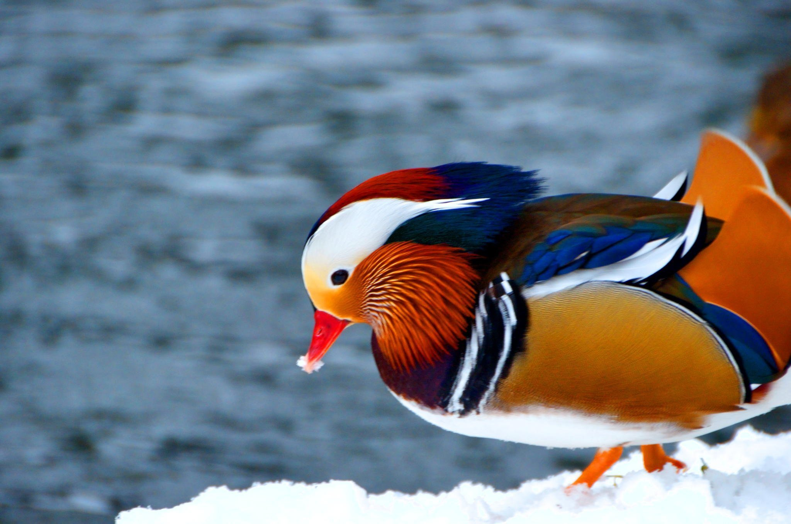

|
Красный волк
Мандаринка
|
Мандаринка
Разновидность птиц

Небольшая птица рода лесных уток. Живёт утка-мандаринка на территории Дальнего Востока. Мандаринка — небольшая утка массой 0,4—0,7 кг. Длина крыла взрослых мандаринок варьирует в пределах 210—245 мм. В России мандаринка гнездится в Амурской и Сахалинской области, в Хабаровском и Приморском краях. На сокращение численности мандаринок на местах гнездования в России влияет охота и енотовидные собаки, уничтожающие гнёзда. Многие охотники отстреливают мандаринку, принимая её за другой вид, так как в зимнем оперении она выглядит иначе.
Источник: https://m.fishki.net/2183273-10-udivitelynyh-zhivotnyh-kotorye-obitajut-v-rossii.html?ysclid=li41hv35wu453660079
|